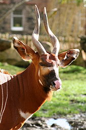
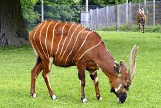
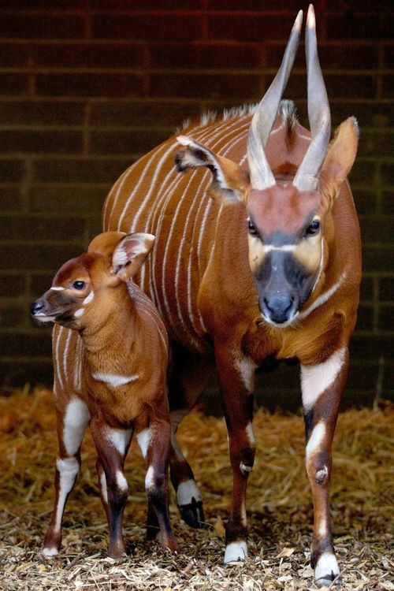
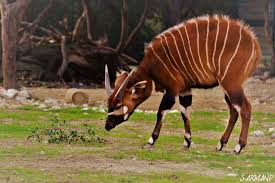
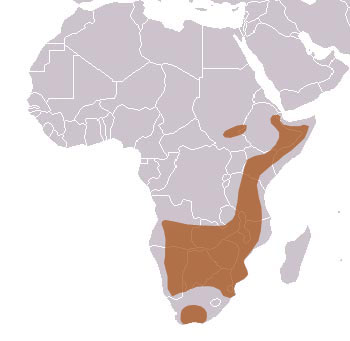

Bongo Habitat
The Bongo is mostly found in the dense forests of eastern, western, and central Africa. The Bongo species can be located in other countries, but with its decreasing rate we do not see much of it anymore. It is now considered to be extinct from a number of different regions today. There are two different types of the bongo species, one consisting of the Lowlands and the other consisting of the mountain species. The Lowlands like to stay and live in the dense lowland forests and bamboo thickets of Western and Central Africa. The mountain Bongos on the other hand are now restricted to just four areas in Kenya after having disappeared from Uganda. The Bongo populations have decreased rapidly, but mainly through the form of deforestation.
Bongo Extinction
The Bongo is a herbivore which means it survives on only eating plants, this is the only way they gain nutrition. They usually feed at night to keep away from other predators that they share their habitats with. They are prey to many other animals around them one consisting of leopards and lions. Another cause of their extinction is that they are prone to disease with the entire population having been nearly wiped out in the late 1800s. Another way they are becoming extinct is not only from humans hunting them but from making way for agriculture and gathering the woods of their forest.
    Bongo Fun Facts
The bongo itself is a very interesting and cool animal, it has many unique factors. For example to help themselves cool down in the heat they wallow in the mud, then after rub on a tree to polish their horns. Many of the native people think the Bongo is this very negative animal, so not only do they refuse to eat it they feel even touching it will cause them to have spasms. The bongo is not yet totally extinct there still remains about 75 individual species of the mountain bongo left in the highland forests of Kenya, where they are now protected. Although the Lowland Bongo is rarer there still seems to be some left in Western Africa.